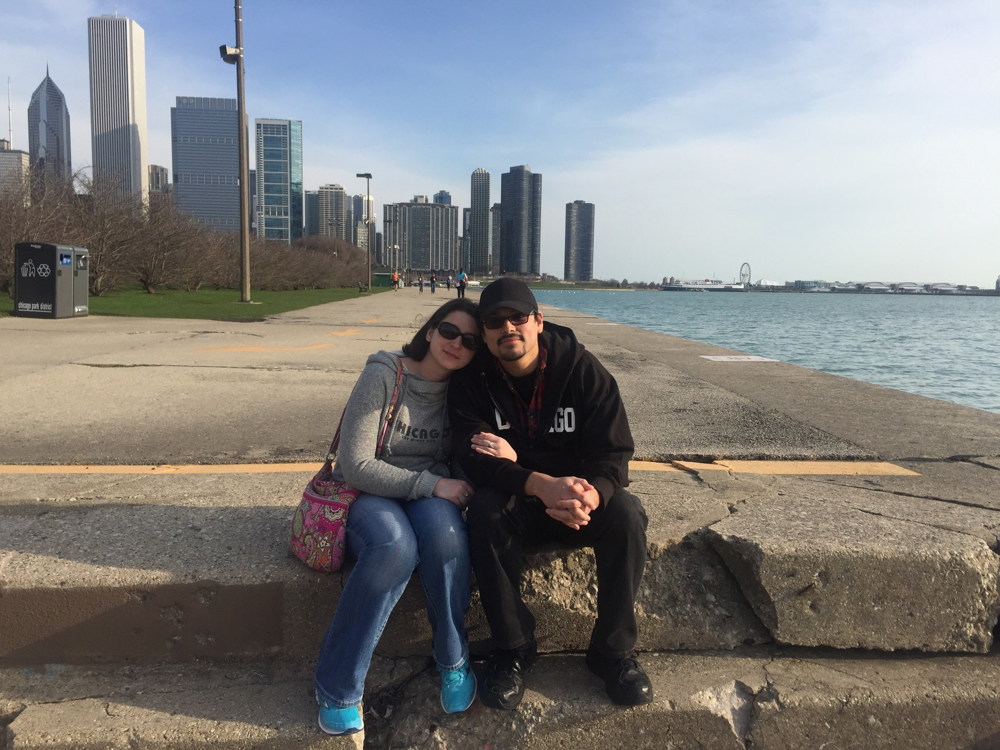

Scenery
I always enjoy any time that I'm out in Chicago. It's a place where I can go and walk around for the entire day. There's no shortage of things to keep my interest. On top of that, being from California, the beaches there are as close as I can get to the feel of the Pacific without making the long trip.
Food
Plenty of spots to get your grub on up out there! One of my personal favorites is the resturant Yolk. It serves cinnamon roll french toast that I haven't been able to find anywhere else. If you're eating on the go, you can grab some churros at the Navy Pier. Rainforest Cafe is another place you can hit up, they have a ice cream cake served with a sparkler in it! A litte over the top, but delicious nevertheless! If you like burgers, Epic Burger is the place to go. It's the only place I've been that the burger actually looks like the pictures in the advertisements.
Why the long face?
If you've noticed the sullen look I have in the pictures, don't worry. It was just a joke to my friends as I didn't want to post the usual vacation pics. So in many of the shots, I tried to look as glum as I could.
